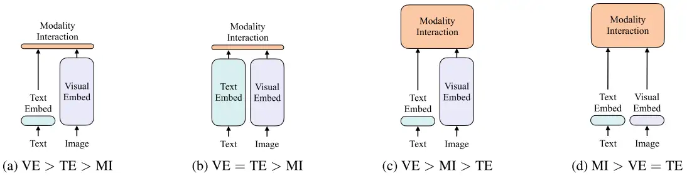
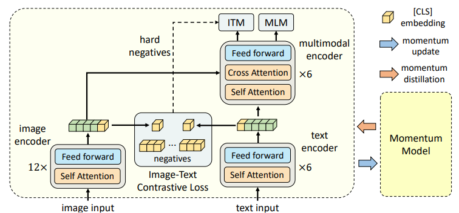

多模态系列(一)- 介绍
多模态系列(一)- 介绍
Transformer Encoder

上图是早期工作的一个简单总结：
- 图 (a) 是VSE或者VSE++的架构，它们的文本端就是直接抽一个文本特征，但是它们的视觉端非常大，需要的计算量非常多，因为它是一个目标检测器。当得到了文本特征和视觉特征之后，它最后只能做一个很简单的模态之间的交互，从而去做多模态的任务。
- 图（b）是CLIP的结构，视觉端和文本端都用同等复杂度的encoder进行特征提取，再做一个简单的模态交互，结构优点是对检索任务极其有效，因为它可以提前把特征都抽好，接下来直接算Similarity矩阵乘法就可以，极其适合大规模的图像文本的检索，非常具有商业价值。缺点是只计算Cosine Similarity无法做多模态之间深度融合，难一些的任务性能差。
- 图（c）是Oscar或者ViLBERT、Uniter采用的架构，因为对于多模态的任务，最后的模态之间的交互非常重要，只有有了模态之间更深层的交互，VQA、VR、VE这些任务效果才会非常好，所以他们就把最初的简单的点乘的模态之间的交互，变成了一个Transformer的Encoder，或者变成别的更复杂的模型结构去做模态之间的交互，所以这些方法的性能都非常的好，但是随之而来的缺点也很明显：所有的这一系列的工作都用了预训练的目标检测器，再加上这么一个更大的模态融合的部分，模型不论是训练还是部署都非常的困难。
- 图 (d) 是ViLT的架构。当Vision Transformer出来之后，ViLT这篇论文就应运而生了，因为在Vision Transformer里，基于Patch的视觉特征与基于Bounding Box的视觉特征没有太大的区别，它也能做图片分类或者目标检测的任务，因此就可以将这么大的预训练好的目标检测器换成一层Patch Embedding就能去抽取视觉的特征，所以大大的降低了运算复杂度，尤其是在做推理的时候。但是如果文本特征只是简单Tokenize，视觉特征也只是简单的Patch Embedding是远远不够的，所以对于多模态任务，后面的模态融合非常关键，所以ViLT就直接借鉴 © 类里的模态融合的方法，用一个很大的Transformer Encoder去做模态融合，从而达到了还不错的效果。因为移除了预训练的目标检测器，换成了可学习的Patch Embedding Layer。
ViLT的优点：
- 模型极其简单。它虽然是一个多模态学习的框架，但跟NLP的框架没什么区别，就是先Tokenized，然后送到一个Transformer去学习，所以非常的简单易学。
ViLT的缺点：
- 它的性能不够高，ViLT在很多任务上是比不过 © 类里的这些方法的，原因是对于现有的多模态任务，需要更多的视觉能力（可能是由于数据集的bias），因此视觉模型需要比文本模型要大，最后的效果才能好，但是在ViLT里，文本端用的Tokenizer很好，但是Visual Embedding是Random Initialized，所以它的效果就很差
- ViLT虽然推理时间很快，但它的训练时间非常慢，在非常标准的一个4 million的数据集set上，ViLT需要64张32G的GPU训练三天，它训练的复杂度和训练的时间丝毫不亚于 © 类的方法，所以它只是结构上简化了多模态学习，但训练难度并没有降低。
通过上面的分析可以对模型和LOSS函数的选择有所启发：
1.模型的结构选择：
- 因为有图像的输入和文本的输入，模型应有两个分支分别抽取图像文本特征。
- 在多模态学习里，视觉特征重要性远远要大于这个文本特征，所以应该使用更大更强的视觉模型。
- 多模态学习模态之间的融合也非常关键，因此需要模态融合的模型尽可能大，所以好的多模态学习网络结构应该像 ©，也就是文本编码器比图像编码器小，多模态融合的部分尽可能大。
2.Loss选择：
- Image Text Contrastive Loss（ITC）：CLIP模型用一个对比学习的ITC Loss训练，效果就很好，而且训练也很高效，建议使用。
- Mask Language Modeling（MLM）：BERT的训练方式，遮住一个词然后再去预判这个词（完形填空）。这个Loss非常有用，目前不论NLP还是Vision，都大一统的用Mask Modeling，建议使用
- Image Text Matching Loss（ITM）：在之前的 © 和 (d) 方法中都取得了很好的结果，建议使用。
3.Loss不选择WPA：
对于（c） 类的这种方法，使用目标检测，所以使用Word Patch Alignment Loss，就是文本的一个单词和图像上的一个Patch应该有一个对应关系，现在不用目标检测模型，而且在ViLT里WPA Loss计算非常慢，模型训练麻烦，不建议使用。
ViLT
原文链接:[2102.03334] ViLT: Vision-and-Language Transformer Without Convolution or Region Supervision
ViLT: Vision-and-Language Transformer Without Convolution or Region Supervision内容理解-CSDN博客
多模态超详细解读 (二)：ViLT：一种极简多模态学习框架 Baseline - 知乎
缺点：
- 性能不够高，很多任务上比不上c类的方法。
因为对于现在的多模态任务而言，有可能是因为数据集的bias，也可能是因为这个任务就需要更多的视觉能力，总之就是需要多更的视觉部分，即视觉部分应该比文本部分要大。在ViLT中文本端采用的很好的tokenizer，视觉embedding确采用的是随机初始化，效果自然就很差
- 尽管推理时间很快，但训练时间非常的慢
在标准的4百万的数据集上，ViLT需要64张32G GPU训练3天。ViLT仅仅在结构上简化了数据集，但其实并没有减少训练成本。
CLIP
对于图像文本匹配和图像文本检索等效果很好
缺点：
- 对VQA,VR,VE性能不够好，仅靠点乘这种多模态交互方式，效果自然不好
ALBEF
原文链接:Align before Fuse: Vision and Language Representation Learning with Momentum Distillation

VLMO
Transformer Encoder+Decoder
- BLIP
- CoCa
- BEIT V3
- PaLI